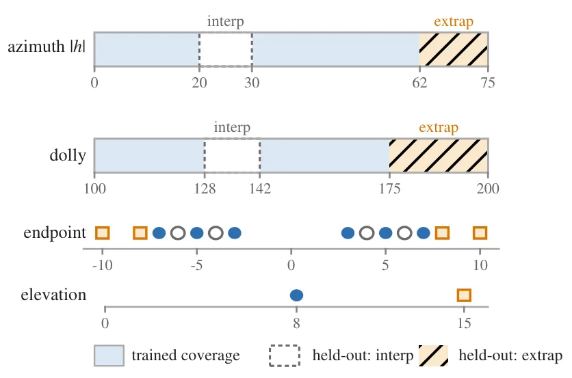
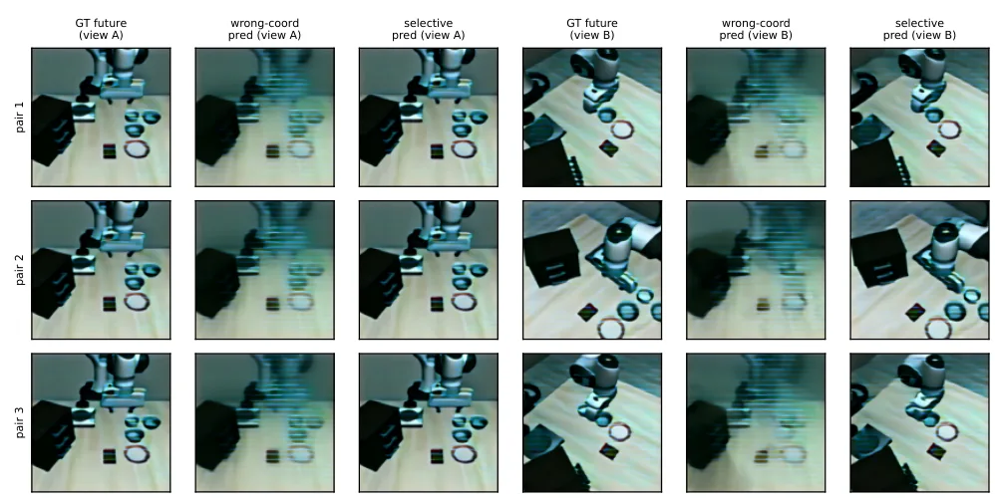
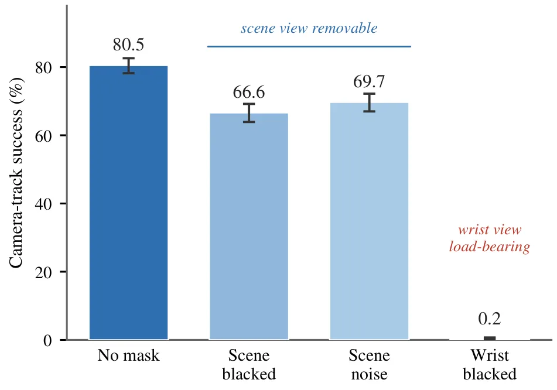
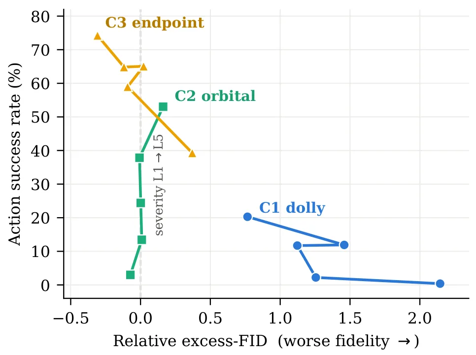
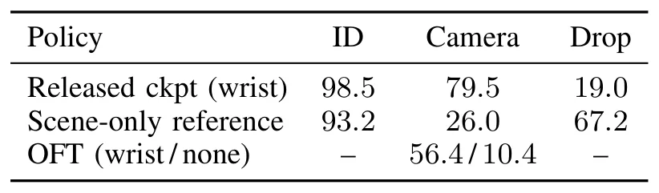
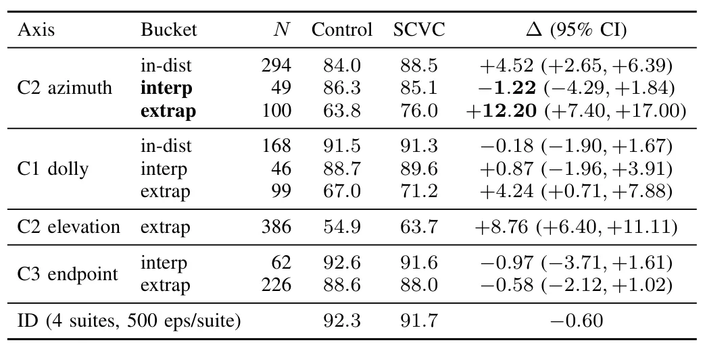

选择性跨视角一致性：无需测试时相机信息的留出视角鲁棒性Selective Cross-View Consistency for World Action Models: Held-Out Viewpoint Robustness Without Test-Time Camera Information
与 SLAM 不直接相同，但聚焦机器人视觉在留出相机视角下的泛化，并提供较严谨的控制组和置信区间。
一句话工作总结
虽然核心是机器人世界动作模型，但其对视角协变/不变量的拆分对多相机、视角变化和视觉导航鲁棒性评测有启发。
摘要
Selective Cross-View Consistency 只对世界动作模型中视角不变的动作、未来本体感知和价值输出施加跨视角一致性，而不约束本应随视角变化的未来场景块。作者在 LIBERO-Plus 相机轨迹上采用留出视角评测，报告轨道外插闭环成功率提升 12.2 个百分点，同时插值和分布内能力基本不变。
World action models (WAMs) jointly denoise future video frames and robot actions, and the video prior is expected to generalize their control. Camera viewpoint change remains one of their hardest perturbation axes. We study a question specific to this model class: when training with same-state cross-view image pairs, on which output coordinates should a consistency loss be imposed? The WAM denoising target mixes view-covariant coordinates, namely the predicted future scene, with view-invariant coordinates, namely the action chunk, future proprioception, and value. We show that consistency applied to the covariant block is provably harmful, shrinking legitimate view-specific content to a fraction $1/(1+4\lambda)$ of its true value, and we verify this shrinkage law in controlled experiments. Selective cross-view consistency (SCVC) therefore constrains only the invariant block, requires no camera labels, extrinsics, depth, or view synthesis at training or test time, and leaves the deployment interface unchanged. We introduce a carve-and-hold-out evaluation protocol on the LIBERO-Plus camera track that separates a distribution-matched ceiling from genuine interpolation and extrapolation to held-out viewpoints, with a matched pair-trained control isolating the effect of the consistency term from pair exposure. On held-out orbital viewpoints beyond the training envelope, SCVC improves closed-loop success over the matched control by 12.2 points (95% CI [7.4, 17.0]; +15.5, CI [11.7, 19.4], under an independent second seed) -- an effect two further camera axes replicate -- while interpolation within the envelope shows no gain in either seed (-1.2 and -4.3 points) and in-distribution competence is preserved (-0.6, -0.2). We also report a cross-backbone audit showing that published camera-robustness numbers are confounded by wrist-camera pose stability.
中文解读摘录
- 中文名：RoboShape：面向隐私保护机器人感知的信息论点云表示
- 方向：点云表示、机器人感知、信息瓶颈、协同建图。
- 要点：在冻结 Sonata 编码器后加入信息论压缩头，同时保留目标理解信息并抑制敏感属性信息；报告嵌入体积缩小 87.5%、物体分类效用保留 98.7%，敏感属性预测下降 39.3%。
- 判断：对云端规划、协同建图和机器人感知数据传输有直接价值，但不是新的 SLAM 后端。
图表/页面预览
{kind=link}

{kind=link}

{kind=link}

{kind=link}

{kind=link}

{kind=link}
